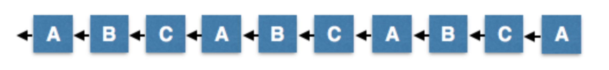
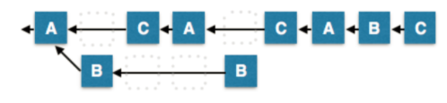

- 00 开篇词 帮你从0到1深入学习区块链技术.md.html
- 尾声篇 授人以鱼，不如授人以渔.md.html
- 新书首发《区块链第一课：深入浅出技术与应用》.md.html
- 第01讲 到底什么才是区块链？.md.html
- 第02讲 区块链到底是怎么运行的？.md.html
- 第03讲 浅说区块链共识机制.md.html
- 第04讲 区块链的应用类型.md.html
- 第05讲 如何理解数字货币？它与区块链又是什么样的关系？.md.html
- 第06讲 理解区块链之前，先上手体验一把数字货币.md.html
- 第07讲 区块链的常见误区.md.html
- 第08讲 最主流区块链项目有哪些？.md.html
- 第09讲 深入区块链技术（一）：技术基础.md.html
- 第10讲 深入区块链技术（二）：P2P网络.md.html
- 第11讲 深入区块链技术（三）：共识算法与分布式一致性算法.md.html
- 第12讲 深入区块链技术（四）：PoW共识.md.html
- 第13讲 深入区块链技术（五）：PoS共识机制.md.html
- 第14讲 深入区块链技术（六）：DPoS共识机制.md.html
- 第15讲 深入区块链技术（七）：哈希与加密算法.md.html
- 第16讲 深入区块链技术（八）： UTXO与普通账户模型.md.html
- 第17讲 去中心化与区块链交易性能.md.html
- 第18讲 智能合约与以太坊.md.html
- 第19讲 上手搭建一条自己的智能合约.md.html
- 第20讲 区块链项目详解：比特股BTS.md.html
- 第21讲 引人瞩目的区块链项目：EOS、IOTA、Cardano.md.html
- 第22讲 国内区块链项目技术一览.md.html
- 第23讲 联盟链和它的困境.md.html
- 第24讲 比特币专题（一）历史与货币.md.html
- 第25讲 比特币专题（二）：扩容之争、IFO与链上治理.md.html
- 第26讲 数字货币和数字资产.md.html
- 第27讲 弄懂数字货币交易平台（一）.md.html
- 第28讲 弄懂数字货币交易平台（二）.md.html
- 第29讲 互联网身份与区块链数字身份.md.html
- 第30讲 区块链即服务BaaS.md.html
- 第31讲 数字货币钱包服务.md.html
- 第32讲 区块链与供应链（一）.md.html
- 第33讲 区块链与供应链（二）.md.html
- 第34讲 从业区块链需要了解什么？.md.html
- 第35讲 搭建你的迷你区块链（设计篇 ）.md.html
- 第36讲 搭建你的迷你区块链（实践篇）.md.html
- 捐赠
第14讲 深入区块链技术（六）：DPoS共识机制
上一篇文章里，我们讲解了PoS共识机制，这一篇我们来分享PoS的一个扩展机制，这个机制在业界也非常的流行，它叫做DPoS共识机制。DPoS全称是Delegated Proof of Stake，中文翻译过来是代理权益证明。
从BM开始聊起的故事
我们聊DPoS时，为什么要从BM聊起呢，
其实，这和聊比特币绕不开中本聪一样，DPoS是BM一手创造的。DPoS不是独立提出的共识算法，而是直接被BM应用到比特股项目中，在稳定运行了3年多后，又接着被BM构造成可复用的区块链工具箱：石墨烯。
虽然应用得很早，但DPoS算法直到2017年才被BM单独拎出来作了一篇“DPoS技术白皮书”，这期间伴随着比特股、Steemit、EOS三个项目的依次发布。
那么到底BM是谁，市场上对这个人的评价为什么富有争议呢？或许我们从了解BM开始，才能体会到DPoS的精髓。
我们在前面的文章中曾简单提过BM，BM的本名是Daniel Larimer，由于他的GitHub昵称是ByteMaster，所以才被称作BM。BM是比特股、Steemit、EOS项目的创始人，截止发稿时，这三个产品的市值均在区块链项目的Top33以内。
与年少成名V神的辍学经历不同，BM 2003年毕业于弗吉尼亚理工学院，获得计算机学士学位，算是正经的科班出身。
BM曾直言不讳地说到：“我的人生目标就是找到自由市场的方案来保护生命、自由和财产”。他认为要达成这个目标，就必须要从货币开始。
我们在数字货币一节提到过，无论是贵金属还是信用货币，都是历史的必然，所以在选择使用什么货币上，BM认为不一定是美元，他希望的是：构造一种自由安全的数字货币。
2009年，他怀揣梦想开始了数字货币的事业，他先发现了比特币，于是不遗余力地推广着这个项目。
然而在2010年，BM指出中本聪10分钟一次的交易确认时间太长了，这样的话，性能会是一个瓶颈，然而这样的想法却遭到了中本聪的暴击：看不懂就算了，我没时间搭理你。
于是，BM觉得比特币不是希望，便着手开发第一个项目——比特股，同时创造出DPoS，把自己的高性能共识算法想法形成了实践。
在这里，我们可以看出DPoS与其他共识机制的第一个区别，就是交易确认时间短。
2014年，当V神还在到处奔走，开始发起以太坊项目的众筹时，当很多项目还是基于比特币的微创新时，比特股就已经横空出世了。
所以比特股一跃成为了当时的明星项目，它的口号是“Beyond Bitcoin”，在这里我们可以感受到极强的攻击性和目的性，也正因为如此，日益强大的比特币社区被树在了它的对立面。
比特股一共有2个版本，比特股在1.0版本之前，某些版本甚至都没有提供向下兼容。虽然后来正式发布了1.0版本，似乎并没有改善多少。糟糕的使用体验，庞大的系统资源开销，还是让尝鲜的用户逐渐流失了。
这时候BM利用了自己手里超过1/3的记账节点，在没有达成社区共识的情况下，强行增发了比特股总量。这一招几乎就是比特股项目的灭顶之灾，社区人就此纷纷退出。
虽然社区萎靡，BM还是继续了开发工作，将比特股升级到了2.0，它的易用性和稳定性勉强可以满足正常使用。随着比特股2.0的发布，BM也同时发布了石墨烯工具箱。
尽管在技术上提供了改进，但比特股社区最终选择让BM离开比特股项目，比特股回到了另一位币圈大佬——巨蟹的手里。随后比特股的发展陷入了长期的低迷，长期在2分，最多到2角钱左右，直到去年的牛市，比特股涨到过2元人民币。
虽然最终离开了比特股，但是BM依然会参与BTS紧急Bug修复工作。与此同时，BM又开发了一款旨在颠覆传统互联网媒体行业的项目——Steemit，这也是开辟了基于区块链Token内容社区的先例。Steemit也是基于石墨烯技术的，它非常流行。
2017年，随着Steemit的成熟，BM宣布退出了Steemit，开展了下一个项目EOS。EOS的目的是要做出区块链行业的操作系统，为开发者提供底层功能，包括并行运算、数据库、账户系统等等。
EOS一经发布，就广受关注，短短五天内，EOS便筹集到了数亿美金，它的代币销售规模在目前为止是最大的。
现阶段的EOS超级节点竞选也体现出了BM强大的影响力。 EOS项目影响力也越来越大，BM因为与V神在区块链上的理念不合，也经常互怼，他们争论的重点是二人对于去中心化的前提假设不同，这也造就了两个不同的设计逻辑，所以，两人的争论过程可以说是非常地吸引眼球了。
我们从BM的个人经历、项目经验、影响力都可以看出BM是一个很懂金融的天才式程序员，同时也是一个有点刚愎自用导致与社区矛盾不断的意见领袖。
DPoS详解
讲完了BM的故事，我们再来讲讲DPoS。我们在前文粗略地讲过DPoS算法，我们先来回顾一下。
简单来理解，DPoS共识算法就是将PoS共识算法中的记账者转换为指定节点数组成的小圈子，而不是所有人都可以参与记账，这个圈子可能是21个节点，也有可能是101个节点，这一点取决于设计，只有这个圈子中的节点才能获得记账权。这将极大地提高系统的吞吐量，因为更少的节点也就意味着网络和节点的可控。
1.DPoS共识的目标
从名称上，我们也可以判断出DPoS与PoS共识是直接关联的。DPoS算法是BM根据当时PoW、PoS的不足而改进的共识算法，它的目的就是为了提高性能，也就是交易确认时间短。
在PoS共识中，人们使用财产证明来“挖矿”，也就是说，这是任何人都可以参与的，只要你持有币，你就可以参与挖矿。
但是我们可以看出，PoS并没有解决性能问题，在这里我们直接认为提高性能就是提高TPS，我们可以构造一个等式，：
TPS = transactions / block_time
TPS表示区块链每秒能确认的交易数， transactions 是由区块大小block_size和平均每笔交易大小决定的，而区块大小受全网网络状态network_bandwidth 限制，也是由记账节点之间物理带宽witness_performance决定的。
记账节点的个数witness_count直接决定了物理带宽的上限，因为记账节点数量越多，则对物理带宽要求越高，对网络的稳定性要求也越高。
要注意的一点是在DPoS中，记账节点不叫做矿工，而是改称为见证人，Witness。
所以这个公式变成了下面的样子。
TPS = (block_size * network_bandwidth * witness_performance) /- (block_time * witness_count)
我们可以看到，要提高TPS，可以提升分子项，降低分母项，也就是增大区块大小block_size、提升记账节点网络带宽network_bandwidth、提升记账节点处理性能witness_performance，减小区块时间block_time、减小记账节点数量witness_count。
分子项我们可以看到，它基本受限于物理资源的上限，目前工业水平制造的物理资源的使用上限基本就是整个项的上限了，所以可操作性不大。
而分母项是由共识算法决定的，所以我们从区块时间，以及记账节点数入手，DPoS算法便正是从这两项着手的。
首先改动的便是限制记账节点的数量，也就是见证人的数量。
我们在PoW和PoS中可以看到，成为记账节点是无需门槛的，你可以随时参与挖矿，随时退出。
那这会带来什么问题呢，首先无法确定记账节点的数量，其次无法确定记账节点之间的网络环境，记账节点数越多网络环境越复杂，这些不确定性会增大网络分区的概率，从而导致区块链分叉。
如果我们事先规定好记账节点的数量，接着让全网所有节点可以投票决定哪些节点可以成为记账节点，这样就限制并减小了分母项witness_count，这个过程我们也称作投票选举。
因为记账节点数量不多，那么我们可以在共识算法中可以规定出块时间为一个固定值，这个值可以很小，通过轮流出块的方式来进行记账。
以上思路基本就是DPoS的基本设计思路，BM还为DPoS算法确立两个原则：
- 投票选举过程一定要保证最大权益所有者最终能控制全网，因为一旦出了问题，他们的损失最大；
- 与PoW、PoS一样，所有节点仅承认“最长”链。
这两个原则确立了DPoS共识的基本特性，第一条放大了PoS共识使用者就是记账者的优点，第二点则规定了分叉时系统应该表现的行为。
2.DPoS共识算法分析
在DPoS共识算法中，区块链的正常运转依赖于见证人(Delegates)，见证人是由全网节点投票产生的，见证人也是记账节点的实际控制人，相当于咱们选课代表，课代表帮我们整理作业。
见证人在完成打包交易的同时可以领取区块奖励和交易的手续费，并且可以执行社区投票的提案，所以DPoS共识算法不仅仅是算法，而是一个包含了协作治理关系的共识机制。
我们可以引用“DPoS算法白皮书”中的内容，来看看BM设计DPoS算法是怎样的思路。
BM认为所有区块链实际是建立交易之上的确定性状态机。共识是在确定交易顺序，过滤无效交易的一个达成一致意见的流程。
DPoS为了尽快确定交易顺序，过滤无效交易，所以规定了在正常情况下，所有记账节点轮流每3秒产生一个区块，轮到了某个记账节点出块时，必须在3秒内提交区块，否则就会错块。
假设一直没有记账节点错过自己顺序，那么他们生产的链条势必是最长的链条，如果记账节点在非指定时间生产区块被认为是无效的，每经过一轮，所有节点轮流出块的顺序就会发生重新洗牌。
下图就是一个理想的轮流记账状态。
- （图来自白皮书）
DPoS算法白皮书介绍了7种异常的情况会打破上面的正常情况。
例如少数记账节点发起恶意分叉或者发生故障，如下图。- - （图来自白皮书）
在这种情形下，B节点只能在9秒内生产1个块，而大多数分支，由于数量多一倍，将预期能在9秒内生产2个块，诚实的2/3的大多数可以比小的那一部分创建一个更长的链条，由于原则二，DPoS可以抵御这种攻击。
在DPoS白皮书中介绍了少数记账节点恶意或故障造成的分叉、网络分区情况下重复出块、少数记账节点重复出块、记账节点数量不足、多数记账节点的联合腐败等各种情况。
由于篇幅有限，你如果感兴趣的话可以自行阅读。遗憾的是白皮书中的内容没有经过严格证明，以定性分析为主，所以我们无法确定DPoS算法是否有设计缺陷。
在实际应用中，比特股中见证人是101人，EOS里是21人。比特股中见证人们赚取手续费，EOS里见证人们分享EOS的通胀收益。他们都是通过公开选举选出来的，选票就是大家手里的比特股或EOS。
3.有关DPoS的一个争论：中心化问题。
我们之前文章中提过的FLP和CAP定理，如果为了提升性能，即一致性的效率，势必会牺牲其他两项。这也会引出有关DPoS的一个争论：中心化问题。
我们以比特股社区为例，每个人都可以尝试成为101个见证人节点中的一个，他们可以在社区里拉票，为社区做事，或者干脆用钱买很多bts。平时大家象征性地开个会，因为是轮流记账，各个节点之间竞争不大。
但是不要忘记，区块链的发展非常依靠社区，这种方式势必会带来社区的中心化。虽然比特股中101个见证人负责记账，但总得有人指定发展方针，于是又设计出了11人理事会，这同样是通过选票选出来的。
11人理事会有很高的权力，他们相当于11个超级节点，通过举手表决，甚至可以决定修改代码，而这11人理事会是比特股系统里的中心，也是规则的制定者。
这是DPoS算法的优势，也是DPoS算法的劣势。在PoW中，矿工、开发者、用户三权分立。
而DPoS似乎将这三权合并到了见证人和理事会手中。在EOS中，BM还制定了区块链宪法，要求所有记账节点必须遵守，所以也有人抨击这是具备了BM特色的去中心化。
从某种角度来看，DPoS是社区治理加上共识算法，不再是单纯的技术共识，这是与PoW、PoS算法最大的不同。
DPoS的基本假设是相信节点是好的，所以尽可能快速选择记账节点，而把问题发生后的修复过程推迟到投票中，可以说DPoS并不考虑拜占庭容错问题，把拜占庭容错推给了社区治理，而在社区治理上可归纳为一切皆投票。
而现实生活中，很多情况下，投票并不能解决问题，比如投票人都是有惰性的，集齐所有人投票成本是很高的，如果记账节点没有上限，所有节点的投票都投给自己，DPoS系统就会退化成PoS系统。
总结
我们来总结一下DPoS共识机制。
DPoS共识机制本身将“矿池”纳入系统内部，并把它们统称为见证节点，虽然不会出现中心化挖矿的风险，但是DPoS由于节点数不多，并且见证节点权力较大，可以认为DPoS本身就是带中心化思路的共识机制。
最后留一个思考题给你，有关DPoS算法，你能想到有哪些攻击方式吗？欢迎给我留言，我们一起讨论。
感谢你的收听，我们下期再见。
链接：
© 2019 - 2023 Liangliang Lee. Powered by gin and hexo-theme-book.